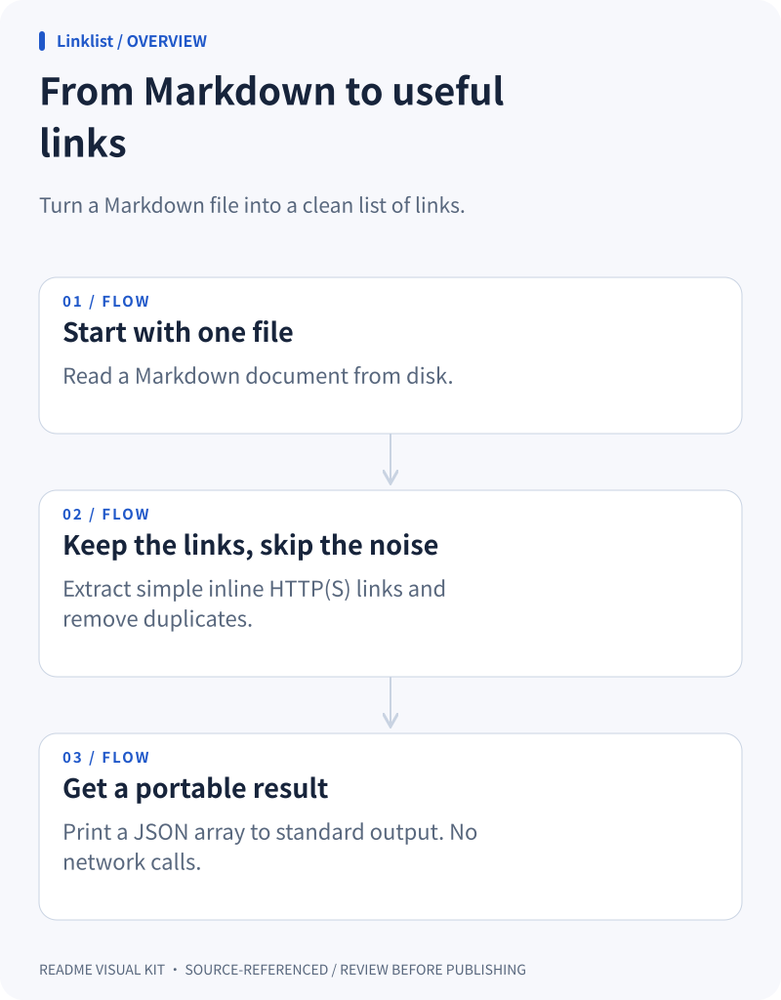

Node.js · CLI
Linklist
A Markdown file becomes a clean, deduplicated list of links.
Open the full preview →Show what it does, how it fits together, and where to start.
Three focused diagrams. Editable SVG. No API key.
Linklist reads one Markdown file from disk, extracts simple inline HTTP(S) links using a regular expression, deduplicates them with a Set, and prints a JSON array to standard output.
No network requests. Not a full CommonMark parser. Requires Node.js 22+.
Correct, but make the flow visible. →
Runnable fixtures built for this kit — not external customer endorsements.
Each includes all three diagrams, light/dark themes and source references.
From the downloaded repository, with Node.js 22+. No npm install.
node scripts/cli.mjs render examples/cli/visuals.json --root examples/cli --out demo
Open demo/index.html. Keep the SVGs, edit the JSON, copy the README snippet.
Nodes cite real files and line ranges. The validator checks that references exist; humans still check meaning.
The included skill guides your existing agent. The renderer draws locally and never calls an AI API.
Review source excerpts before publishing. You can share only the SVGs and keep evidence private.